graph LR
X1(("$$X_1$$")) --> X2(("$$X_2$$"))
X2 --> dots(("..."))
dots --> Xn(("$$X_n$$"))
3 Bayesian Hidden Markov Models
3.1 Accenni di Teoria
Processo Markoviano
Definizione 3.1 (Processo stocastico) Un processo stocastico è una famiglia (o collezione) di variabili aleatorie \(\{X_t\}_{t \in T}\), indicizzate da un parametro \(t\) appartenente a un insieme (tipicamente \(T\) è il tempo, continuo o discreto).
Nel caso discreto a passi equispaziati, il processo si rappresenta come \(\{X_t\}_{t \geq 1}\).
Le variabili aleatorie possono essere continue o discrete e possono essere correlate tra loro. Questa dipendenza caratterrizza alcune delle proprietà che il processo può assumere come la stazionarietà, l’indipendenza o la correlazione. Queste proprietà possono definire categorie di processi stocastici, ad esempio i processi di Poisson sono caratterizzati da eventi che si verificano in modo indipendente e i processi stazionari sono caratterizzati da proprietà statiche, che non cambiano nel tempo.
Il processo markoviano è un caso specifico dei processi stocastici, e in questo caso la proprietà principale è che lo stato futuro dipende solamente dal suo presente e non dal passato. O, che l’ossrevazione presente dipenda solo dal suo passato più recente. L’ipotesi assuntiva è molto forte e permette di semplificare drasticamente un modello di serie storiche. Infatti non servirà più osservare l’intero passato per predire il futuro, ma basterà appena avere le informazione sullo stato precedente. Ciò si basa su proprietà base della probabilità, nel caso di un processo markoviano di primo ordine, l’osservazione successiva dipenderà solamente dalla precedente:
Definizione 3.2 (Proprietà di Markov) Sia \(\{X_t\}\) un processo stocastico. Allora \(\{X_t\}\) è markoviano di ordine 1 se e solo se \[ \Pr(X_t \mid X_{t-1},\dots,X_1) = \Pr(X_t \mid X_{t-1}) \qquad t \ge 2. \tag{3.1}\]
Per la Definizione 3.2, tutte le future donazioni sono indipendenti da quelle passate, ad eccezione di \(k\) osservazion più recenti, dove \(k\) è il grado della catena markoviana: \(x_{n+1} \perp x_{n-1} | x_n\).
Una catena di Markov omogenea (stazionaria nel tempo) è caratterizzata da:
la matrice di transizione \(\mathbf{A}\) con elementi \(a_{ij} = \Pr(X_t = j \mid X_{t-1} = i)\), per \(t \ge 2\);
il vettore di probabilità iniziali \(\boldsymbol{\pi}\) con \(\pi_i = \Pr(X_1 = i)\);
lo spazio degli stati finiti \(Z = \{1,\dots,K\}\).
Proprietà strutturali
Di seguito alcune proprietà importanti che verrano usate in seguito per la descrizione e definizione degli Hidden Markov Model in generale e di quello specificatamente utilizzato nel progetto.
Definizione 3.3 (Ergodicità (catene omogenee)) Sia \(\{X_t\}_{t\ge 0}\) una catena di Markov a tempo discreto su spazio degli stati finito \(Z\) con matrice di transizione \(\mathbf{A}\) (costante nel tempo). Se la catena è irriducibile, aperiodica e positivamente ricorrente, allora esiste ed è unica una distribuzione stazionaria \(\boldsymbol{\pi}^*\) tale che \(\boldsymbol{\pi}^* \mathbf{A} = \boldsymbol{\pi}^*\). Levin, Peres, e Wilmer (2009).
Il tempo di mixing misura quanto rapidamente la distribuzione della catena “dimentica” le condizioni iniziali e si avvicina a \(\boldsymbol{\pi}^*\).
Definizione 3.4 (Catena di Markov omogenea nel tempo) Una catena di Markov discreta \(\{X_t\}_{t \ge 0}\) su spazio degli stati finito \(Z\) si dice omogenea (o stazionaria nel tempo) se esiste una matrice di transizione costante \(\mathbf{A}\) tale che, per ogni \(t \ge 1\) e per ogni \(i,j \in Z\), \[ \Pr(X_t = j \mid X_{t-1} = i) = A_{ij}, \tag{3.2}\]
ossia le probabilità di transizione non dipendono dal tempo.
Definizione 3.5 Una distribuzione \(\boldsymbol{\pi}\) si dice stazionaria se soddisfa \[ \boldsymbol{\pi}\,\mathbf{A} = \boldsymbol{\pi}, \qquad \boldsymbol{\pi}\,\mathbf{1} = 1,\ \ \boldsymbol{\pi}\!\ge\! \mathbf{0}. \tag{3.3}\]
Una catena, invece, è detta non omogenea se la transizione al tempo \(t\) è data da una matrice \(\mathbf{A}_t\) che può dipendere da \(t\) o da covariate \(x_t\), cioè \(\mathbf{A}_t=\mathbf{A}(x_t)\). In generale:
non esiste una distribuzione stazionaria unica (indipendente dal tempo) che soddisfi \(\boldsymbol{\pi}\,\mathbf{A}_t=\boldsymbol{\pi}\) per tutti i \(t\);
si usa la nozione di “ergodicità debole”: le distribuzioni indotte da condizioni iniziali diverse si avvicinano tra loro sotto opportune condizioni di contrazione.
Inferenza bayesiana
In un HMM l’approccio bayesiano fornisce un linguaggio naturale per incorporare conoscenza a priori e per regolarizzare stime potenzialmente instabili, soprattutto quando gli stati latenti sono pochi, i dati sono rumorosi e le transizioni rare. L’idea è assegnare distribuzioni a priori ai parametri chiave (probabilità iniziali sugli stati e matrice di transizione) e poi combinarle con l’evidenza dei dati per ottenere le posteriori. Tra le scelte più convenienti c’è la famiglia Dirichlet, coniugata rispetto a vettori di probabilità: consente aggiornamenti semplici e interpretazioni immediate in termini di “pseudo-conteggi”.
Nel caso di stati finiti \(Z=\{1,\dots,K\}\), si pone una a priori Dirichlet sul vettore delle probabilità iniziali e, riga per riga, sulle transizioni: \[ \boldsymbol{\pi}\ \sim\ \mathrm{Dirichlet}(\boldsymbol{\alpha}_\pi), \qquad \mathbf{A}_{k,\cdot}\ \sim\ \mathrm{Dirichlet}(\boldsymbol{\alpha}_{A_k})\quad (k=1,\dots,K). \]
Qui \(\boldsymbol{\alpha}_\pi\) e \(\boldsymbol{\alpha}_{A_k}\) sono vettori di iperparametri positivi. La loro somma rappresenta la “forza” della prior: quanto più è grande, tanto più la prior influenzerà la posteriore rispetto ai dati. Una prior simmetrica (tutte le componenti uguali) è non informativa in senso debole; una prior asimmetrica, invece, incorpora credenze specifiche, ad esempio maggiore massa sullo stato “inattivo” per \(\boldsymbol{\pi}\) o maggiore persistenza sulla diagonale per le righe di \(\mathbf{A}\).
Dati uno o più percorsi latenti \(z_{1:T}\) la coniugatezza della Dirichlet corrisponde agli aggiornamenti per somma di conteggi. Se indichiamo con \(c_i\) il numero di sequenze che iniziano nello stato \(i\) e con \(n_{k j}\) il numero di transizioni osservate \(k\to j\), allora \[ \boldsymbol{\pi}\mid z_{1} \ \sim\ \mathrm{Dirichlet}\big(\boldsymbol{\alpha}_\pi + \mathbf{c}\big), \qquad \mathbf{A}_{k,\cdot}\mid z_{1:T} \ \sim\ \mathrm{Dirichlet}\big(\boldsymbol{\alpha}_{A_k} + \mathbf{n}_{k,\cdot}\big), \]
dove \(\mathbf{c}=(c_1,\dots,c_K)\) e \(\mathbf{n}_{k,\cdot}=(n_{k1},\dots,n_{kK})\). Ne discendono formule chiuse per media e predittiva: ad esempio la stima bayesiana (posterior mean) del termine \(A_{k j}\) è \[ \mathbb{E}\!\left[A_{k j}\mid \text{dati}\right] = \frac{\alpha_{A_k j} + n_{k j}}{\sum_{h=1}^K \big(\alpha_{A_k h} + n_{k h}\big)}, \]
e la probabilità di transizione “one-step-ahead” integra automaticamente lo smoothing dei rari passaggi fuori diagonale. Questa proprietà è particolarmente utile quando alcune transizioni sono poco o per nulla osservate: la Dirichlet evita stime nulle e stabilizza l’inferenza.
Intuizione sui parametri Dirichlet
Pensare a \(\boldsymbol{\alpha}\) come a pseudo-conteggi: una prior simmetrica con \(\alpha=1\) per ciascuna voce equivale a “una osservazione virtuale” per stato; aumentare la diagonale nelle righe di \(\mathbf{A}\) equivale a credere che la catena tenda a permanere nello stesso stato; usare \(\boldsymbol{\alpha}_\pi\) asimmetrica (ad esempio più grande sulla componente dello stato 0) riflette l’aspettativa che molte sequenze inizino “a riposo”.
Un tema tipico negli HMM è il “label switching”: gli stati possono scambiarsi etichette senza cambiare la verosimiglianza. Una prior Dirichlet asimmetrica su \(\boldsymbol{\pi}\) e/o “diagonale rinforzata” su \(\mathbf{A}\) spezza la simmetria, facilitando la stabilità numerica e l’interpretazione dei profili latenti.
Scelte pratiche
In problemi con forte persistenza conviene una prior sulle righe di \(\mathbf{A}\) con massa più alta sulla diagonale; quando si sa che lo stato iniziale è sbilanciato (molti “inattivi”), una prior su \(\boldsymbol{\pi}\) coerente con questa conoscenza accelera la convergenza e riduce il label switching. Le concentrazioni totali moderatamente piccole mantengono la prior “debole” lasciando ai dati il grosso dell’inferenza.
Dal punto di vista computazionale, l’uso di priors Dirichlet si integra bene con schemi variazionali o EM, in quanto è coniugata alla multinomiale. Le statistiche sufficienti sono i conteggi attesi di occupazione e di transizione, ottenibili da forward–backward. (Murphy (2012)) In variational Bayes o SVI, questi compaiono come termini attesi nell’ELBO e consentono aggiornamenti stabili anche su dataset ampi, mantenendo l’interpretabilità delle stime come “conteggi osservati + pseudo-conteggi”. (Bishop (2006))
Teoria dell’algoritmo di Viterbi (caso generale)
Nel caso classico di HMM con distribuzione iniziale \(\boldsymbol{\pi}\), matrice di transizione \(\mathbf{A}\) ed emissioni \(b_j(y_t)=\Pr(y_t\mid z_t{=}j)\), l’algoritmo di Viterbi cerca il percorso a Maximum A Posteriori (MAP), ovvero cerca lo stato latente \(z_{0:T}^\star\) per la quale sia massima la sua probabilità \[ z_{0:T}^\star=\arg\max_{z_{0:T}}\Pr(z_{0:T}\mid y_{0:T}) \tag{3.6}\]
L’idea è trasformare questo problema globale in una sequenza di passi locali grazie alla programmazione dinamica: invece di tenere traccia di tutti i cammini possibili, si propaga nel tempo, per ciascuno stato \(j\), il valore della “miglior” probabilità cumulativa che termina in \(j\).
Per stabilità numerica si lavora in log-spazio. Si definisce quindi \(\delta_t(j)\) come il massimo, tra tutti i cammini che arrivano a \(t\) in \(j\), della log-probabilità congiunta fino a \(t\). Il passo iniziale è: \[ \delta_0(j)=\log \pi_j+\log b_j(y_0), \tag{3.7}\]
che combina la probabilità di partire nello stato \(j\) con la verosimiglianza dell’osservazione iniziale. Il passo ricorsivo somma l’evidenza al tempo \(t\) alla migliore prosecuzione dal tempo precedente: \[ \delta_t(j)=\log b_j(y_t)+\max_k\bigl\{\delta_{t-1}(k)+\log A_{k j}\bigr\}. \tag{3.8}\]
Per ricostruire il percorso, oltre ai valori \(\delta_t\) si memorizzano i backpointer \(\psi_t(j)\), cioè l’indice \(k\) che massimizza l’espressione tra graffe. Al termine, si sceglie \(z_T^\star=\arg\max_j \delta_T(j)\) e si risale a ritroso con \(z_{t-1}^\star=\psi_t(z_t^\star)\) fino a \(t=1\). Dunque, Viterbi calcola in avanti i punteggi ottimali e, alla fine, riassembla all’indietro il cammino MAP.
Dal punto di vista computazionale, Viterbi è lineare nella lunghezza della sequenza e quadratico nel numero di stati, con complessità \(\mathcal{O}(T\,K^2)\) e memoria \(\mathcal{O}(T\,K)\) (per i backpointer). In implementazione conviene usare sistematicamente la forma log quando servono normalizzazioni, così da evitare underflow e garantire stabilità. Rabiner (1989)
I motivi per preferirlo sono pratici oltre che teorici: restituisce un percorso ottimale globale rispetto alla loss 0–11 sulla sequenza intera ed è efficiente anche su serie lunghe. Inoltre, è stabile numericamente grazie al lavoro in log ed è soprattutto deterministico e facilmente interpretabile, qualità preziose per analisi più approfondite e successive personalizzazioni. Infine, si adatta senza sforzo a contesti non omogenei o con covariate, come nel nostro HMM-GLM, perché la dinamica ricorsiva resta invariata e cambia soltanto la parametricità di \(\pi\), \(A\) ed emissioni.
3.2 Il modello applicato alle donazioni
Pyro
Dopo la parte teorica, in questo capitolo parleremo della applicazione della teoria ai dati sulle donazioni di sangue. Se nel precedentemente capitolo era stato utilizzato quasi totalmente il linguaggio di programmazione statistica R con i pacchetti tidyverse e tidymodels, in questo capitolo i modelli verranno sviluppati attraverso il linguaggio di programmazione Python e il pacchetto Pyro.
Pyro è un linguaggio universale di programmazione probabilistica scritto in Python e costruito con PyTorch nel backend. Ma a cosa serve? Secondo Bingham et al. (2018), Pyro permette di scrivere in modo facile e flessibile modelli probablistici, tra cui modelli di deep learning e bayesiani. I punti di forza di Pyro sono i seguenti:
universale, in quanto può rappresentare qualsiasi distribuzione di probabilità computabile;
scalabile, ideale per lavorare su grandi data set;
minimale, è costituito da un piccolo ma potente core, e
flexible, è facilmente automatizzabile, ma al contempo controllabile, quando necessario.
Ovviamente non è l’unico strumento utilizzabile per costruire i modelli mostrati successivamente. Una valida alternativa è stan, implementata in R attraverso i pacchetti come rstan.
Dati e covariate
I dati sono stati inizialmente elaborati in R, succesivamente esportati in formato tabellare (CSV), ed infine importati in Python. L’obiettivo era quello di ottenere dei dati in formato tabulare dove ogni riga rappresentasse il donatore e con una colonna per ogni anno d’osservazione, contenente il numero di donazioni effettuate in quello specifico anno. Infine, altre colonne con le informazioni sul donatore, come l’anno di nascita, il genere e l’età. Successivamente, i dati sono stati modificati ulteriormente addattandoli all’ambiente di sviluppo in Python.
Abbiamo ottenuto così un un pannelo longitudinale con \(N = 9236\) donatori, le loro donazioni negli anni 2009-2023 (\(T = 15\)) e le covariate con le informazioni demografiche sul donatore. Per la modellizzazione dei dati si è diviso il dataset iniziale in 4 dataset più piccoli:
il primo contenente le colonne costituite dai conteggi annuali per donatore;
il secondo contenente le covariate necessarie per la determinazione delle probabilità iniziali;
il terzo costituito dalle covariate per la matrice di transizione,
e l’ultimo contenente le covariate per i modelli GLM.
Dataset sulle osservazioni delle donazioni
Il primo dataset sarà costituito da sole \(y_t \in \{0,1,2,3,4\}\), dove \(t\) è il tempo. Il limite superiore del dominio dei dati è dovuto a una regola clinica: ovvero un donatore può al più donare 4 volte all’anno per sangue intero. Questo ha portato all’utilizzo di distribuzioni probabilistiche improrie, ovvero che non erano contemplate per la natura dei dati, ma che a causa della loro forma, si adattavano molto bene al caso nostro.
La distribuzione di probabilità più appropriata sarebbe stata infatti una distribuzione binomiale, o una categorica. Tuttavia la distribuzione di Poisson era quella che meglio si adattava i dati, anche se è stata troncata sulla coda destra a causa della regola clinica.
Dataset con le covariate per le probabilità iniziali
Il secondo dataset sarà usato per calcolare \(\pi = Pr(Z_{n,1} \mid X_{n,1}^{\pi})\), ovvero la probabilità dell’individuo \(n\) di iniziare nello stato \(k\), date le covariate \(X_{n,1}^{\pi}\), dove \(X_{n,1}^{\pi}\) è una matrice di dimensione \(N, P_\pi\) con \(p_\pi\) il numero di covariate utilizzate.
Le probabilità iniziali vengono calcolate solo per il primo stato. Devono, perciò, sfruttare delle informazioni disponibili al tempo \(1\). Le sue covariate saranno di conseguenza statiche.
La sua importanza è relativa, infatti grazie alla matrice di transizione, le unità si sposteranno tra gli stati e assumeranno lo stato che più gli si adatta allo specifico tempo \(t\).
Dataset con le covariate per la matrice di transizione
Il modello che verrà sviluppato in questo capitolo è diverso da un classico hidden markov model e non possiederà tutte le sue proprietà. In specifico non gode della proprietà di omogeneità, ovvero non è un modello stazionario (vedi Definizione 3.4). Non ci aspettiamo che un donatore appartenga sempre allo stato, ovvero che sia propenso sempre allo stesso modo di donare. Riteniamo che esso dipenda da fattori esterni che influenzino il suo comportamento. Questi fattori non sono fissi e cambiano nel tempo. Sarà dunque necessario includere delle covariate dinamiche, che cambiano nel tempo, come l’età del donatore. Otterremo dunque una matrice di 3 dimensioni \(N, P_A, T\) dove \(N\) è il numero di donatori, \(P_A\) il numero di variabili usate e \(T\) gli anni usati dal modello.
Le covariate utilizzate saranno l’età e gli anni del covid. Analizzando l’età, si osserva come il suo andamento non sia lineare. Al crescere dell’età non si può assertare né che il numero di donazioni sia in aumento, né che il numero di donazioni sia in diminuzione. Infatti agli estremi, ovvero nelle fasce d’età più giovani e più anziane si osserveranno un numero di donazioni minore mentre nella fascia centrale, un numero di donazioni maggiore. Sia \(\mathbf{X}\) e \(\mathbf{Y}\) due vettori (o matrici) e sia \(\mathbf{A}\) una matrice di trasformazione tale che \[ \mathbf{Y} = \mathbf{A}\,\mathbf{X} + \boldsymbol{\varepsilon}. \]
Il nostro obiettivo è trovare \[ \arg\min_{\mathbf{A}\in\mathbb{R}^{q\times p}} \|\mathbf{Y}-\mathbf{A}\mathbf{X}\|^2. \]
Le opzioni possibili per gestire il suddetto problema sono molteplici, dalle più semplici alle più complesse.
Tra le principali strategie si possono citare:
aggiunta di potenze della variabile: ad esempio includendo termini quadratici o cubici dell’età (\(\text{età}^2, \text{età}^3, \dots\)) per catturare eventuali relazioni non lineari;
categorizzazione della variabile: suddividere l’età in fasce (es. 18–24, 25–34, 35–44, …) e introdurre variabili dummy per ciascuna categoria, consentendo al modello di apprendere effetti differenti per ciascun gruppo;
funzioni spline: utilizzare spline lineari o cubic spline per rappresentare in modo flessibile l’andamento non lineare dell’età, mantenendo al contempo una continuità nei punti di raccordo;
altri approcci di regolarizzazione o riduzione di dimensionalità: ad esempio penalizzazioni (ridge, lasso) per evitare overfitting in presenza di molte trasformazioni, oppure tecniche di smooth fitting per controllare la complessità del modello.
Queste trasformazioni permettono di modellare meglio l’effetto dell’età, evitando di imporre una relazione lineare troppo restrittiva e garantendo al tempo stesso una maggiore flessibilità nella costruzione della matrice di transizione.
Tra le diverse strategie illustrate, in questo lavoro si è deciso di adottare la categorizzazione della variabile età.
Questa scelta consente di distinguere in modo chiaro le diverse fasce d’età dei donatori, mantenendo al tempo stesso un modello interpretabile. In particolare, le categorie permettono di osservare come il comportamento donazionale vari nei diversi gruppi, evidenziando ad esempio differenze tra i donatori più giovani, quelli in età intermedia e i più anziani.
In questo modo si ottiene un compromesso tra semplicità e capacità di rappresentare l’andamento non lineare della variabile, evitando di introdurre complessità eccessiva tramite spline o polinomi di grado elevato.
Durante la pandemia da coronavirus SARS-CoV-2 la propensione a donare e le sue motivazioni sono cambiate molto. Riteniamo quindi di dovere aggiungere quest’informazione al modello e manipolare la serie storica in questo momento storico in modo a se stante. Infatti grazie all’introduzione di questa covariate si possono osservare in quegli anni, un profondo cambiamento del trend.
Dataset con le covariate per i GLM
Attraverso le probabilità iniziali e la matrice di transizione possiamo risalire allo stato latente dell’individuo lungo la sua serie storica. Con l’obbietivo di predire il valore atteso della prossima donazione, lo stato latente più importante che ci interesserà conoscere, sarà l’ultimo stato latente, ovvero lo stato che ci dirà quale dei \(K\) diversi modelli utilizzare. Il HMM-GLM ha esattamente questo di differenza confronto un normale HMM, l’HMM-GLM non restituisce un rate, o il parametro di una qualsiasi distribuzione; ma restituisce l’indicazione a quale modello usare. Infatti, ipotizziamo che il modello generatore dei dati sia significativamente diverso tra i 3 diversi pattern di dontari. E non è una differenza fissa/statica, ma una differenza molto più complessa, che è influenzata anche da altri fattori. Per questo, si ritene opportuno usare 3 modelli diversi per modellare e predire le future donazioni di sangue.
Le covariate scelte in questo caso sono un incrocio tra covariate statiche e dinamiche. Le variabili scelte sono il genere, le fasce d’età e il periodo covid.
Componenti del Modello
Il modello, come citato in Sezione 3.2.1, è definito tramite Pyro. Si ritiene che sia importante esplicitare il codice, tanto quanto la stesura di una formula matematica. Mediante la lettura del codice si comprende a pieno le potenzialità di Pyro e la struttura del modello.
Il numero di stati latenti, K, è stato fissato a 3. Quindi, \(z_{n,t} \in \{0,1,2\}\), e non sono osservate. La loro interpretazione reale sarà il profilo di donatore, ovvero se sarà un donatore frequente, occasionale o sporadico.
Le osservazioni, \(y_{n,t} \in \mathbb{N}\), sono conservate nella variabile obs, che è una matrice di dimensione N, T e assume valori in \([0,4]\). Come spiegato nel capitolo precedente (vedi Sezione 3.2.2), sono presenti altre tre matrici composte da:
covariate sulle probabilità inziali, \(W_\pi \in \mathbb{R}^{K\times 2}\);
covariate sulla matrice di transizione, \(W_A \in \mathbb{R}^{K\times K \times 8}\); e
covariate sulle emissioni, \(\beta_{em} \in \mathbb{R}^{K \times (1+9)}\), che in questo caso saranno le covariate dei \(K\) diversi modelli.
Approccio Bayesiano
Abbiamo adottato un approccio bayesiano per le componenti che governano le probabilità iniziali e le transizioni dell’HMM, usando prior di tipo Dirichlet sulle intercette e lasciando stimare per MAP (via pyro.param) le pendenze che modulano l’effetto delle covariate. In particolare:
distribuzione iniziale: \(\pi_{\text{base}} \sim \text{Dirichlet}(\boldsymbol{\alpha}_\pi)\) con \(\boldsymbol{\alpha}_\pi\) asimmetrica per spezzare la simmetria delle etichette e incorporare la conoscenza a priori sull’elevata prevalenza dello “stato inattivo” (non-donatore), dovuto al fatto che al tempo \(t=0\), ancora molti dei donatori non avevano iniziato a donare;
matrice di transizione: per ciascuna riga \(k\), \(A_{\text{base}}[k,\cdot] \sim \text{Dirichlet}(\boldsymbol{\alpha}_{A_k})\). Abbiamo valutato sia una a priori non informativa (simmetrica) sia una a priori “diagonale” (con massa concentrata sulla permanenza \(k \to k\)).
Motivazioni per l’approccio bayesiano:
identificabilità pratica: una prior asimmetrica su \(\pi\) mitiga il label switching e rende più stabile il confronto tra fit riavviati con semi diversi;
inferenza scalabile: l’uso della variazionale stocastica con enumerazione esatta delle variabili discrete (
TraceEnum_ELBO) riduce la varianza del gradiente e consente di trattare in modo efficiente le catene latenti \(z_{n,t}\) (Hoffman et al. (2013));coerenza interpretativa: la combinazione “prior diagonale” su \(A\) e Poisson/Gamma sulle emissioni porta a tre profili comportamentali stabili (non-, leggero, frequente donatore), con transizioni credibili e facilmente comunicabili.
Definizione del modello
Il modello è caratterizzato da due cicli annidati tra loro, uno sul numero di osservazioni e l’altro sulla serie temporale. Questi cicli sono caratterizzati da un passo base e un passo iterativo. Potremmo definire l’algoritmo così come segue:
Passo base \(n\):
campionamento delle a priori e conversione in base logaritmica per le variabili \(\pi_{\text{base},k}\) e \(A_{\text{base},kj}\)
calcolo dei coeffienti tramite la matrice delle covariate per i parametri \(W_{\pi,k}\), \(W_{A,kj}\) e \(\beta_{em,}\).
Passo iterativo \(n\):
Passo base \(t\):
Calcolo delle probabilità inziale dell’individuo di iniziare la sua traiettoria nello stato \(k\), tramite la formula \[ \Pr(z_{n,0}=k \mid x^\pi_n) = \text{softmax}_k \big( \log \pi_{\text{base},k} + W_{\pi,k} \cdot x^\pi_n \big) \tag{3.9}\]
e campionamento dello stato da tali probabilità.
Calcolo del parametro \(\log (\mu_{n,t}^{\text{em}})\) corrispondente al logaritmo del valore atteso di donare al tempo \(t=0\). Campionamente di \(y_0\) dalla distribuzione di Poisson con il parametro appena calcolato.
Passo iterativo \(t\):
Calcolo delle probabilità di transizione al tempo \(t\) sfruttando la matrice di transizione calcolata nel passo base di \(n\) e pesata per le informazioni che si hanno a disposizione per l’unità \(n\) al tempo \(t\). Attraverso questa formula \[ \Pr(z_{n,t}=j \mid z_{n,t-1}=k, \ x^A_{n,t}) = \text{softmax}_j \big( \log A_{\text{base},kj} + W_{A,kj} \cdot x^A_{n,t} \big) \tag{3.10}\]
si campiona la probabilià che l’unità \(n\) occupi lo stato \(j\) al passo \(t\) sapendo che al passo \(t-1\) occupava lo stato \(k\).
Dato lo stato \(j\), calcolato al punto precedente, campionamento del numero di donazioni al tempo \(t\): \[ y_{n,t} \mid z_{n,t}=k \sim \text{Poisson}\Big( \exp\Big( X^{em}_{n,t} \mathbf{\beta_{em,k}} \Big) \Big) \tag{3.11}\]
K = 3 # Number of latent states
C_pi = cov_init.shape[1] # Initial-state covariates
C_A = cov_tran.shape[2] # Transition covariates
C_em = cov_emission.shape[2] # Emission covariates
# Dirichlet prior
alpha_pi = torch.tensor([5., 2., 1.])
alpha_A = torch.ones((K, K))
@config_enumerate
def model(obs, x_pi, x_A, x_em):
N, T = obs.shape
# 1) Priors/parameters for initial and transition distribution
pi_base = pyro.sample("pi_base", dist.Dirichlet(alpha_pi))
A_base = pyro.sample("A_base", dist.Dirichlet(alpha_A).to_event(1))
log_pi_base = pi_base.log()
log_A_base = A_base.log()
# 2) Slope coefficients for initial and transition covariates
# and State-specific GLM emission coefficients (learned)
W_pi = pyro.param("W_pi", torch.zeros(K, C_pi))
W_A = pyro.param("W_A", torch.zeros(K, K, C_A))
beta_em = pyro.param("beta_em", torch.zeros(K, C_em))
with pyro.plate("seqs", N):
# Initial hidden state probabilities: depend on x_pi via W_pi
logits0 = log_pi_base + (x_pi @ W_pi.T)
z_prev = pyro.sample("z_0",
dist.Categorical(logits=logits0),
infer={"enumerate": "parallel"})
# Emission at t=0: state-specific GLM on covariates x_em
log_mu0 = (x_em[:, 0, :] * beta_em[z_prev, :]).sum(-1)
pyro.sample("y_0", dist.Poisson(log_mu0.exp()), obs=obs[:, 0])
# For t = 1 ... T-1, update state and emit
for t in range(1, T):
x_t = x_A[:, t, :]
logitsT = log_A_base[z_prev] + (W_A[z_prev] * x_t[:,None,:]).sum(-1)
z_t = pyro.sample(f"z_{t}",
dist.Categorical(logits=logitsT),
infer={"enumerate": "parallel"})
# Emission: state-specific GLM at time t
log_mu_t = (x_em[:, t, :] * beta_em[z_t, :]).sum(-1)
pyro.sample(f"y_{t}",
dist.Poisson(log_mu_t.exp()),
obs=obs[:, t])
z_prev = z_tDefinizione del guide
Il guide specifica la famiglia variazionale \(q(\cdot)\) utilizzata da SVI (stochastic variational inferance) per approssimare la posteriore. Qui scegliamo una approssimazione “a massa puntuale” (Delta) per i soli nodi continui latenti del modello, cioè le intercette della distribuzione iniziale e della matrice di transizione: \(q(\pi_{\text{base}})=\delta(\pi_{\text{base}}-\hat\pi)\) e \(q(A_{\text{base}})=\delta(A_{\text{base}}-\hat A)\).
Le variabili discrete \(z_{n,t}\) non compaiono nel guide perché vengono enumerate esattamente nel modello (@config_enumerate), e i coefficienti \(W_\pi\), \(W_A\), \(\beta_{\text{em}}\) sono stimati come parametri deterministici (pyro.param). In termini teorici, si massimizza l’ELBO scegliendo una famiglia variazionale degenere (MAP) per \(\pi_{\text{base}}\) e \(A_{\text{base}}\), in modo da semplificare l’ottimizzazione e stabilizzare l’identificazione. Anche se, in questo modo, non si quantifica l’incertezza.
I vincoli simplex (dist.constraints.simplex) garantiscono che \(\hat\pi\) e ciascuna riga di \(\hat A\) siano probabilità valide (non negative e a somma unitaria). L’inizializzazione deve già rispettare il vincolo: normalizziamo \(\boldsymbol{\alpha}_\pi\) per ottenere un punto di partenza ammissibile per \(\pi_q\), mentre per \(A_q\) usiamo una matrice “diagonale rinforzata” rinormalizzata per riga, che favorisce la persistenza.
def guide(obs, x_pi, x_A, x_em):
pi_q = pyro.param(
"pi_base_map",
alpha_pi,
constraint=dist.constraints.simplex
)
# Each row: simplex for state-to-state transitions
A_init = torch.eye(K) * (K - 1.) + 1.
A_init = A_init / A_init.sum(-1, keepdim=True)
A_q = pyro.param(
"A_base_map",
A_init,
constraint=dist.constraints.simplex
)
pyro.sample("pi_base", dist.Delta(pi_q).to_event(1))
pyro.sample("A_base", dist.Delta(A_q).to_event(2))Allenamento del modello
L’addestramento dell’HMM-GLM è stato condotto con un approccio bayesiano variazionale. Il modello principale è stato allenato su tutti i dati, in modo da avere un modello in produzione il più performante possibile. In area di sviluppo, invece, il dataset è stato suddiviso in train/test con split 90/10, stratificando per genere e fascia d’età al tempo iniziale e fissando il seed a 42, per garantire la riproducibilità. Ottenendo così due dataset, il dataset con i dati d’allenamento, train \(N=8308\), e il dataset con i dati di test, test \(N=928\).
Le covariate, come visto anche nella Sezione 3.2.3.2, sono state progettate in tre blocchi coerenti con le tre componenti del modello: iniziali \(x^\pi\in\mathbb{R}^{3}\) (intercetta, birth_year_norm in z-score, gender_code F=1/M=0), transizioni \(x^A_t\in\mathbb{R}^{8}\) (intercetta; fasce d’età one-hot con baseline 18–24 age_class; indicatore covid_year per 2020–2022), ed emissioni \(x^{\text{em}}_t\in\mathbb{R}^{9}\) (intercetta; gender; stesse dummies d’età; covid_year).
Scelta del numero di parametri
Il numero di stati latenti è stato fissato a \(K=3\) per ragioni di interpretabilità e stabilità numerica. Inoltre, la scelta è stata giustificata anche dal Bayesian Information Criterion, BIC Wit, Heuvel, e Romeyn (2012). Il BIC è un criterio per la selezione del modello statistico da usare basato sulla funzione di verosimiglianza ma che viene penalizzato all’aumentare del numero di parametri e dalla scarsezza del numero di osservazioni ed è definito come segue: \[ \text{BIC} = k\ln(n) - 2\ln(\widehat L) \tag{3.12}\]
dove \(\widehat L\) è la funzione di verosimiglianza, \(n\) il numero di osservazioni e \(k\) il numero di parametri. Il motivo per la quale si usa il logaritmico sul numero di ossarvazioni, \(\ln(n)\), è dovuto alla maledizione delle dimensionalità (Bellman (1957)): all’aumentare del numero di parametri è necessario un numero esponenzialmente crescente di osservazioni per mantenere invariato il livello di incertezza nelle stime.
Osservando il grafico Figura 3.1, si nota, come il criterio BIC raggiunga il suo massimo con il numero di stati pari a 3. Nel grafico, non viene utilizzata la formula precedentemente descritta, ma una sua variante in modo da comparare facilmente l’assenza dell’utlizzo di un parametro di penalizzazione nella likelihood e la sua aggiunta. La formula usata è la seguente:
\[ \text{BIC-like} = \ln(\widehat L) - \frac{1}{2} k \ln(n) \tag{3.13}\]

Dal punto di vista numerico, l’ottimizzazione è stata effettuata con Adam a passo \(2\cdot 10^{-2}\), operando in full-batch per ogni step (tutte le sequenze in una singola plate), in quanto il numero di osservazioni non era eccessivo. Il ciclo di addestramento ha previsto 2000 step; l’ELBO decresce rapidamente nelle prime epoche per poi stabilizzarsi. Al termine, i parametri vengono salvati nel ParamStore per l’uso in produzione e per la riproducibilità (modello in produzione “prod”: models/hmm_glm_full.pt; modello per lo sviluppo “dev” per valutazioni su hold-out: models/hmm_glm_train.pt).
Per contenere i costi computazionali, si osservi che la complessità per step è dell’ordine \(\mathcal{O}(N\,T\,K^2)\), dominata dalle transizioni \(K\times K\) e dall’enumerazione; con \(K=3\) il training è agevole anche su CPU. Tuttavia, il codice è costruito in modo da poter essere girato anche su GPU Nvidia, attraverso l’utilizzo dell’archittetura cuda, che permetterebbe lo sviluppo in parallelo.
pyro.clear_param_store()
svi = SVI(model, guide,
Adam({"lr": 2e-2}),
loss=TraceEnum_ELBO(max_plate_nesting=1))
for step in range(2000):
loss = svi.step(obs_torch,
cov_init_torch,
cov_tran_torch,
cov_emiss_torch)
if step % 200 == 0:
print(f"{step:4d} ELBO = {loss:,.0f}")
param_path = here("models/hmm_glm_full.pt")
pyro.get_param_store().save(param_path)
print(f"ParamStore saved in: {param_path}")3.3 Risultati
Poiché le tre componenti centrali dell’HMM-GLM sono la distribuzione iniziale sugli stati, la matrice di transizione e l’emissione (GLM di Poisson specifico di stato), presentiamo i risultati scomponendo l’analisi lungo questi assi e distinguendo tra grandezze di “popolazione” (ottenute inserendo valori medi delle covariate) e grandezze “soggetto-specifiche” (ottenute dalle covariate effettive di ciascun donatore).
Attenzione
A causa di diverse versioni del codice, nei riferimenti e nelle varie rappresentazioni grafiche possono trovarsi etichette differenti per gli stati. Adotteremo la seguente convenzione: lo stato 0 sarà lo stato del non-donatore (Non-donor); lo stato 1 del donatore saltuario (Occasional donor) e lo stato 2 del donatore frequente (frequent donor).
Per le probabilità iniziali si applica Equazione 3.14 (versione in termini matriciali di Equazione 3.9): \[ \pi_n = \text{softmax}\!\big(\log \pi_{\text{base}} + x^\pi_n W_\pi^\top\big), \tag{3.14}\]
dove \(x^\pi_n\) sono le covariate del donatore \(n\). Un riassunto di popolazione si ottiene sostituendo \(x^\pi_n\) con la media campionaria delle covariate (plug-in) e calcolando la corrispondente \(\bar\pi\). Il grafico in Figura 3.2 (a) mostra che la quota di donatori che, al tempo iniziale, si colloca nello stato “dormiente/non-donatore” (stato 0) è molto elevata (circa 78%). Le restanti masse si ripartiscono tra stato 1 (saltuario, circa 19%) e stato 2 (abituale, circa 3%). Questo esito è coerente con la struttura dei dati, che includono gli anni precedenti alla prima donazione riempiti con zeri (completamento longitudinale), e con la prior asimmetrica su \(\pi_{\text{base}}\) che spezza la simmetria delle etichette e riflette l’alta prevalenza iniziale dello stato 0.
La matrice di transizione media in Figura 3.2 (b) evidenzia forte persistenza di stato: la probabilità di permanenza sulla diagonale è alta per tutti e tre gli stati (circa \(P(0\!\to\!0)\simeq 0{,}84\), \(P(1\!\to\!1)\simeq 0{,}88\), \(P(2\!\to\!2)\simeq 0{,}87\)), mentre i termini fuori diagonale sono tutti inferiori a circa 0,10. In termini pratici, i passaggi tra profili comportamentali sono rari; ciò vale in media e a parità di covariate, mentre a livello individuale le probabilità di transizione vengono modulate dalle covariate \(x^A_{n,t}\) (fasce d’età e indicatore COVID). Si osserva inoltre, a livello di occupazione di stato nella popolazione, uno spostamento di massa dagli stati meno attivi verso quelli più attivi nel 2020–2022, coerente con l’effetto dell’indicatore COVID nelle transizioni (Figura 3.5).


Coefficienti \(\beta_{\text{em}}\)
Per le emissioni non ha senso parlare di “probabilità di donare \(x\) nello stato \(k\)” indipendentemente dalle covariate, perché nel nostro HMM-GLM il tasso di Poisson dipende dallo stato e dalle covariate: \(\log \lambda_{n,t,k} = x^{\text{em}}_{n,t}\cdot \beta_{\text{em},k}\). La lettura più chiara è dunque in termini di coefficienti esponenziati, che rappresentano effetti moltiplicativi sul valore atteso.
Il grafico in Figura 3.2 (c) e la tabella Tabella 3.1 riportano, per ciascuno stato, l’intercetta (donatore maschio, 18–24 anni, in periodo non COVID) e i fattori moltiplicativi per genere, età e COVID. In particolare: l’intercetta vale 0 nello stato 0 (dormiente), 0,84 nello stato 1 (saltuario) e 2,02 nello stato 2 (abituale). Il coefficiente “gender” (<1 in tutti gli stati) implica, a parità di età e periodo, un tasso atteso inferiore per le donne: ad esempio, nello stato 2 una donna 18–24 anni in periodo non COVID ha \(2.02\times 0{,}56 \approx 1{,}14\) donazioni attese (-44% rispetto al maschio baseline). Gli effetti d’età sono deboli nello stato 1 (fattori prossimi a 1) e crescenti nello stato 2: per 55–59 anni il moltiplicatore è circa 1,18 e per 60–64 è circa 1,22 (in linea col profilo “abituale” più marcato nelle classi d’età centrali-avanzate). L’indicatore COVID agisce in modo eterogeneo: è >1 nello stato 1 (circa 1,24, “boost” relativo), circa 1 nello stato 2 (circa 0,97, lieve attenuazione/neutralità) e >>1 nello stato 0 (circa 2,51), ma in quest’ultimo caso l’aumento relativo non si traduce in un incremento assoluto rilevante perché la base è approsimativamente 0.
| intercept | gender | age [25-34] | age [35-44] | age [45-54] | age [55-59] | age [60-64] | age [+65] | covid | |
|---|---|---|---|---|---|---|---|---|---|
| Non-donor | 0 | 0.13 | 0.16 | 0.11 | 0.53 | 10.35 | 0.59 | 0.69 | 2.15 |
| Occasional donor | 0.84 | 0.75 | 0.92 | 0.99 | 1.06 | 1.08 | 1.02 | 0.9 | 1.24 |
| Frequent donor | 2.02 | 0.56 | 1.01 | 1.05 | 1.11 | 1.18 | 1.22 | 1.15 | 0.97 |
Nel complesso, le tre componenti del modello convergono verso un quadro coerente: la maggior parte dei donatori inizia nello stato di bassa attività, i profili sono altamente persistenti con rari passaggi tra stati, i GLM per stato catturano differenze interpretabili per genere, età e shock COVID, con un chiaro gradiente di intensità dallo stato 0 (quasi nullo) allo stato 2 (frequente). Per passare dalle letture di popolazione a valutazioni soggetto-specifiche, nella sezione sul Viterbi e sul filtraggio forward mostriamo come le distribuzioni sugli stati e le previsioni one-step-ahead si ottengano combinando le \(A_{n,t}\) condizionate alle covariate con i tassi \(\lambda_{n,t,k}\) dei GLM di stato.
Coefficienti \(W_\pi\)
Osservando i coefficienti delle probabilità inziali \(W_\pi\), si nota come la probabilità che un donatore inizi dallo stato 2 aumenti al crescere dell’anno di nascita, mentre decresce la probabilità di inziare dallo stato 0 (Figura 3.3 (b)). Per il genere, invece, sarà più probabile che una donatrice inizi dallo stato 0 che dallo stato 2, mentre per lo stato 1 l’effetto è meno accentuato. Come visto nel capitolo introduttivo, nelle analisi preliminari (vedi Sezione 1.2.2), osservando la tabella delle donazioni per genere ed età (vedi Tabella 1.3) si osservava come ci fosse un forte incremento di donazioni da parte delle donatrici più giovani negli ultimi anni. Ciò giustificherebbe i coefficienti presenti in Figura 3.3 (a).

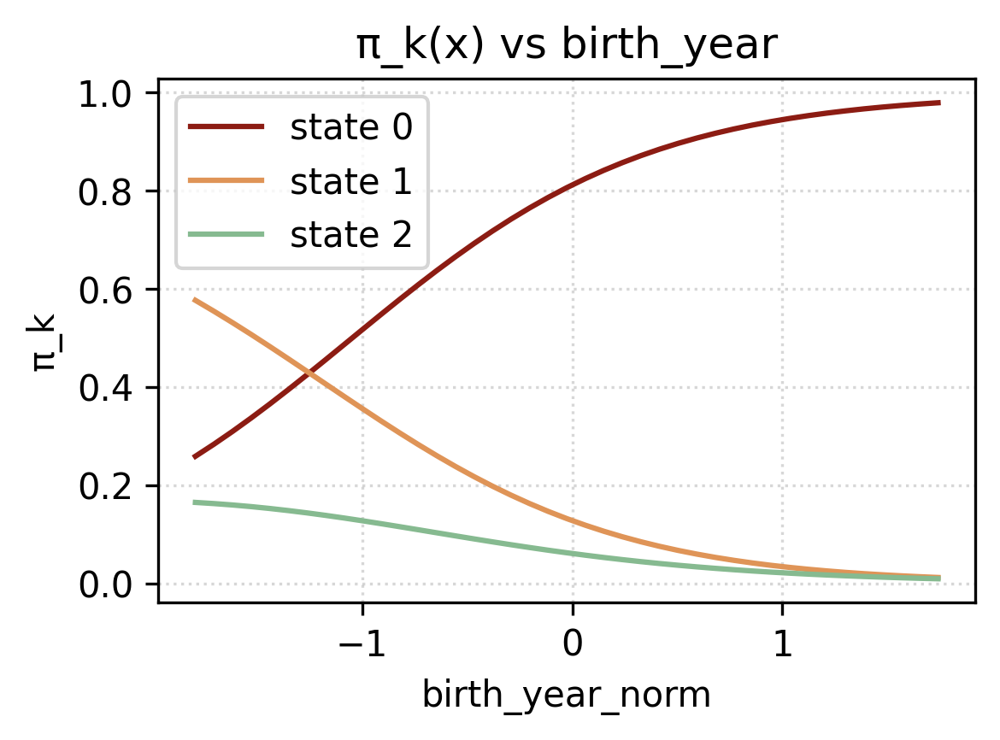
Coefficienti \(W_A\)
Dai coefficienti della matrice di transizione Figura 3.4, si possono trarre diverse osservazioni.
Partendo dalle fasce d’età, e in specifico dalla transizione \(0 \to 0\), si può vedere come la probabilità di rimanere nello stato 0 decresca all’aumentare dell’età, ad eccezione della fascia +65. Infatti, ricordiamo che il limite in Italia per donare sangue è di 65 anni, ad eccezione dei donatori regolari, che è estesa a 70, previa consultazione medica. Infatti aumenta la probabilità delle transizioni \(1 \to 0\) e \(2 \to 1\) nella fascia +65.
Per quanto riguarda l’effetto covid, durante gli anni della pandemia la probabilità delle transizioni \(0 \to 0\), \(1 \to 0\) e \(2 \to 0\) erano minori, invece erano maggiori per le transizioni \(0 \to 1\) e \(1 \to 1\). Si osserva anche che molti donatori frequenti, in quel periodo, hanno ridotto il numero di donazioni (\(2 \to 1\)).
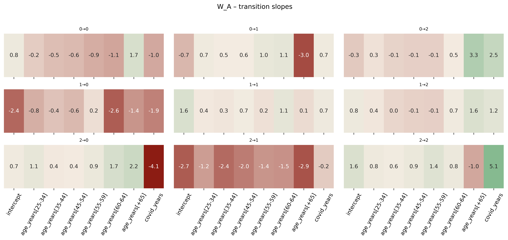
3.4 Algoritmi e diagnostiche
Viterbi con covariate
Nel nostro HMM-GLM le tre componenti dipendono da covariate:
la distribuzione iniziale \(\pi(x^\pi)\) tramite \(\,\text{softmax}(\log\pi_{\text{base}} + W_\pi x^\pi)\),
le transizioni \(A(x^A_t)\) tramite \(\,\text{softmax}(\log A_{\text{base}} + \langle W_A,\ x^A_t\rangle)\) e
l’emissione Poisson-GLM per stato \(k\) con \(\,\log\lambda_k(t)=x^{\text{em}}_t{}^\top\beta_{\text{em},k}\).
A parametri fissati (plug-in), il percorso MAP \(z_{0:T}^*\) si ottiene per programmazione dinamica, con un passo base e un passo iterativo.
Inizializzazione: tramite l’Equazione 3.15 si ricavano le probabilità per stato al tempo 0. L’emissione (\(\log \Pr\bigl(y_0\mid z_0{=}k\bigr)\)) è la poisson con parametro \(\lambda_k(0)=\exp\!\bigl(x^{\text{em}}_0{}^\top\beta_{\text{em},k}\bigr)\). \[ \delta_0(k)=\log \pi_k(x^\pi) + \log \Pr\bigl(y_0\mid z_0{=}k\bigr), \tag{3.15}\]
Ricorsione per \(t=1,\dots,T\): in quest’altro caso l’Equazione 3.16 è data dal massimo della probabilità di stare nello stato precedente, \(k\), sommato alla probabilità di spostarsi al tempo \(t\) dallo stato \(k\) allo stato \(j\). Successivamente viene sommata la log-probabilità di emissione. \[ \delta_t(j)=\max_{k}\Big\{\delta_{t-1}(k) + \log A_{k\to j}\!\bigl(x^A_t\bigr)\Big\} + \log \Pr\bigl(y_t\mid z_t{=}j\bigr), \tag{3.16}\]
Backtracking: è più semplice del passo forward, in questo caso bisognerà cercare l’argomento che massimiza la funzione \(\delta\). \[ z_T^*=\arg\max_j \delta_T(j),\qquad z_{t-1}^*=\psi_t\!\bigl(z_t^*\bigr)\quad (t=T,\dots,1). \tag{3.17}\]
Occupancy e Switch-rate
Con l’algoritmo appena descritto, andiamo a calcolare per ogni donatore nel nostro dataset la sue serie temporale attesa di stati latenti e rappresentiamo in un grafico (vedi Figura 3.5) la loro distribuzione lungo gli anni. I risultati mostrano come lo stato 2, ovvero dei donatori frequenti è abbastanza stabile e in leggero aumento. Mentre, si nota come durante la pandemia ci sia stato un notevole spostamento dallo stato 0 (non donatore) allo stato 1 (donatore saltuario). Ciò è stato confermato nella sezione precedente (Sezione 3.3.3) dove attraverso il grafico dei coefficenti della matrice di transizione \(W_A\) si osservava (vedi Figura 3.4) come la probabilità di passare dallo stato 0 a uno stato superiore fosse molto maggiore che in un periodo in assenza della pandemia.
Forward per log-likelihood
Data una serie di osservazioni, ovvero di donazioni e un set di informazioni demografiche sull’individuo, il nostro scopo sarà quelllo di prevedere il numero di donazioni all’anno successivo, dunque il suo stato latente al tempo \(T+1\).
La forward recursion fornisce la log-verosimiglianza e la distribuzione filtrata sugli stati, utile per la previsione one-step-ahead. Definendo \(\alpha_t(j)=\Pr(z_t{=}j\mid y_{0:t})\) (fino a normalizzazione), si ha:
Filtering \[ \tilde\alpha_t(j)=\Pr(y_t\mid z_t{=}j)\sum_k \alpha_{t-1}(k)\,A_{k\to j}\!\bigl(x^A_t\bigr), \tag{3.18}\]
\[ \alpha_t(j)=\frac{\tilde\alpha_t(j)}{\sum_h \tilde\alpha_t(h)}. \tag{3.19}\]
Log-verosimiglianza
Indichiamo con \(c_t=\sum_h \tilde\alpha_t(h)\) il fattore di normalizzazione; allora \(\log p(y_{0:T})=\sum_{t=0}^T \log c_t\), oppure, equivalmente, \(\log p(y_{0:T})=\log\!\sum_j \alpha_T(j)\) se si lavora interamente in log-spazio senza rinormalizzazioni intermedie.
Previsione one-step-ahead (mixture predittiva). Condizionando su \(\alpha_T\) e propagando con la transizione covariata al tempo \(T\!+\!1\), \[ p_{T+1}(j)=\sum_k \alpha_T(k)\,A_{k\to j}\!\bigl(x^A_{T+1}\bigr), \tag{3.20}\]
\[ \mathbb{E}[\,y_{T+1}\mid y_{0:T}\,]=\sum_{j=1}^K p_{T+1}(j)\,\lambda_j(T{+}1), \tag{3.21}\]
dove \(\lambda_j(T{+}1)=\exp\bigl(x^{\text{em}}_{T+1}{}^\top \beta_{\text{em},j}\bigr)\). Poiché la predittiva è una mistura di Poisson, sono immediati anche \(\,\Pr(y_{T+1}{=}0)=\sum_j p_{T+1}(j)\exp\bigl(-\lambda_j(T{+}1)\bigr)\) e \(\,\Pr(y_{T+1}{>}0)=1-\Pr(y_{T+1}{=}0)\). (Degirmenci (2014))
Predizioni
Una volta montato l’algoritmo in Python, sarà necessario dare in input gli argomenti necessari al modello che sono: birth_year, gender e history_counts che contiene il numero di donazioni per anno osservate finora. La funzione restituirà, attraverso l’algoritmo appena descritto, la probabilità di appartenere allo stato \(k\) al tempo \(T+1\) (vedi Tabella 3.3) ma anche al tempo \(1, \dots, T\) (vedi Tabella 3.2), il valore atteso del prossimo numero di donazioni e la sua distribuzione (vedi Tabella 3.4).
Nota
Le osservazioni vanno dal 2009 al 2023. Tuttavia, per poter far un confronto tra la predizione e il valore reale, la serie storica è stata troncata al tempo \(T\). Questo dimostra anche una flessibilità nel modello, che non necessità un numero fisso di osservazioni temporali.
| Years (20XX) | 09 | 10 | 11 | 12 | 13 | 14 | 15 | 16 | 17 | 18 | 19 | 20 | 21 | 22 |
|---|---|---|---|---|---|---|---|---|---|---|---|---|---|---|
| Counts | 0 | 0 | 0 | 3 | 4 | 3 | 4 | 3 | 4 | 3 | 2 | 2 | 2 | 3 |
| Viterbi st. | 0 | 0 | 0 | 2 | 2 | 2 | 2 | 2 | 2 | 2 | 2 | 2 | 2 | 2 |
| State | 0 | 1 | 2 |
|---|---|---|---|
| Next-state probabilities: | 0.005 | 0.125 | 0.870 |
| # donations | 0 | 1 | 2 | 3 | 4 |
|---|---|---|---|---|---|
| Probability | 0.175 | 0.275 | 0.252 | 0.164 | 0.131 |
| Expected next donations: | 1.871 | ||||
| Prob donate next: | 0.824 |
In Figura 3.6 si possono vedere degli esempi su donatori che seguono traiettorie ben distinte tra loro. Il modello è capace di seguire le loro traiettorie e adattarsi in eventuali cambi di comportamento del donatore. In Figura 3.6 (d), il modello è dormiente fino alla sua prima donazione per poi assegnare al donatore lo stato 2, ovvero di donatore frequente. In Figura 3.6 (a), invece, il donatore inzia da uno stato 2 per poi passare nel tempo a un calo nel numero di donazioni annue, ed il suo stato mutua da 2 a 1. Alla fine di ciascun grafico è presente il numero di donazioni predetto dal modello e il numero di donazioni effettivamente effettuate all’anno \(T+1\). Il colore del triangolo rappresenta lo stato più probabile all’anno successivo.
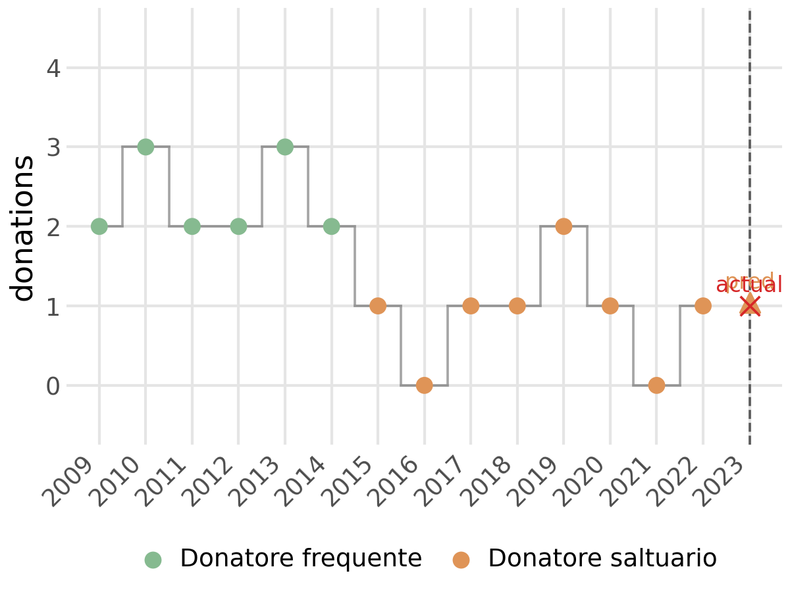
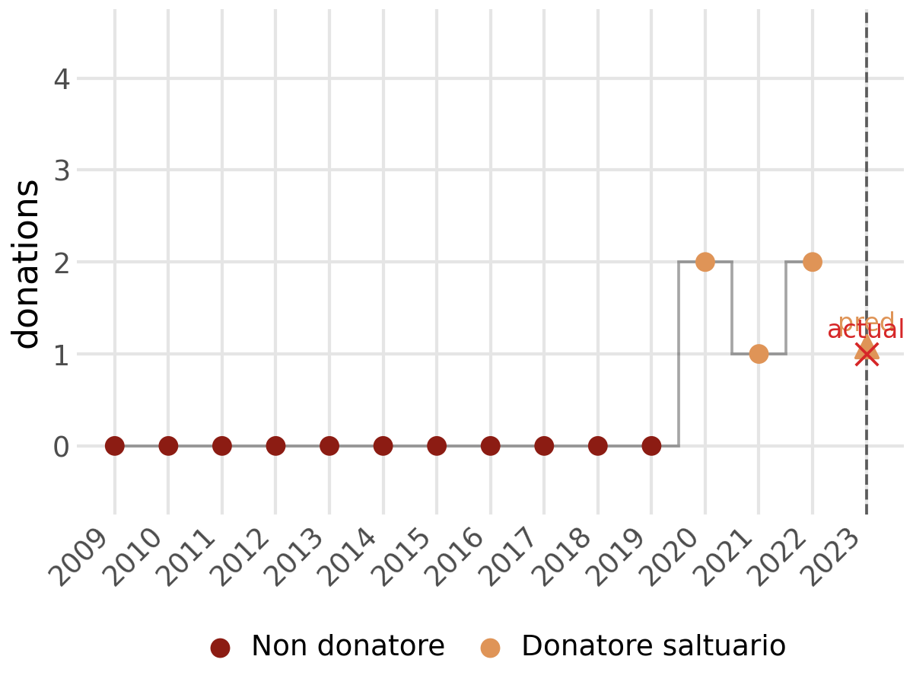
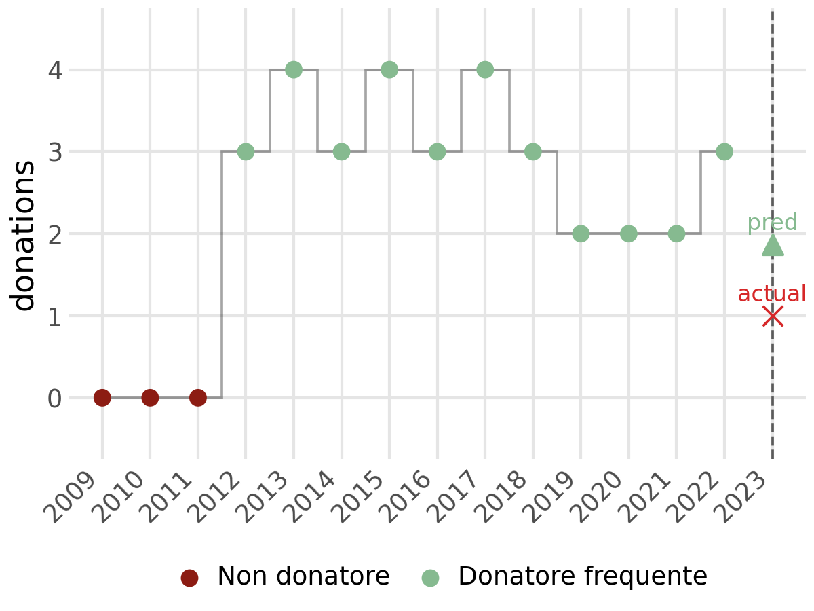
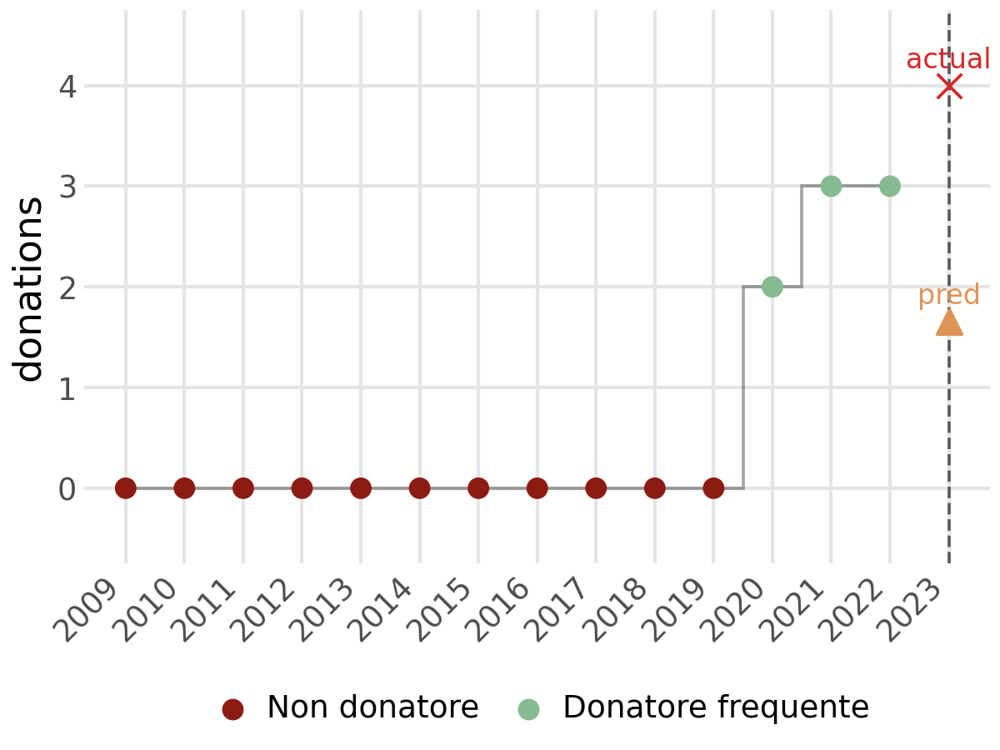
Calibrazione e confronto con GLM
Per valutare la capacità predittiva in senso comparativo abbiamo utilizzato come benchmark un GLM di Poisson “vanilla” senza stati latenti, alimentato con le stesse covariate usate nelle emissioni (intercetta, genere, fasce d’età, indicatore COVID). In questo modo l’incremento di performance è attribuibile alla componente latente (personalizzazione per stato e dinamica via transizioni).
Come descritto nella sezione sull’allenamento (Sezione 3.2.3.4), la valutazione è stata condotta su uno split train/test 90/10 stratificato per genere e fascia d’età al tempo iniziale (seed fisso), così da mitigare bias e overfitting e garantire comparabilità.
Metrica
Come metrica principale è stata usata l’accuracy su conteggi discreti è definita come \[ \mathrm{Accuracy} = \frac{1}{N}\sum_{n=1}^N \mathbf{I}\!\big\{\operatorname{round}(\hat y_n) = y_n\big\}, \tag{3.22}\]
dove le predizioni sono arrotondate all’intero più vicino e ricondotte all’intervallo consentito \([0,4]\) prima del confronto. La stessa convenzione di arrotondamento è stata applicata a entrambi i modelli.
Predizione HMM-GLM
Per il punto di previsione in \(T{+}1\) usiamo due metodi distinti: in un caso considereremo la mistura sugli stati come fatto nel capitolo precedente (Sezione 3.4.2); nell’altro selezioneremo solo lo stato più probabile in \(T{+}1\), \(j^\star = \arg\max_j\, p_{T+1}(j),\) e applicheremo il GLM di quello stato: \[ \widehat y_{T+1} = \operatorname{round}\!\big(\exp(x^{\mathrm{em}}_{T+1}{}^\top \beta_{\mathrm{em},\,j^\star})\big), \tag{3.23}\]
con successivo clipping in \([0,4]\).
Risultati
L’HMM-GLM ottiene un’accuracy superiore al GLM (42.24% vs 27.48%; vedi figura Figura 3.7), ottenendo dunque una predizione migliore basata solamente sul numero di unità predette correttamente. Tuttavia, sul livello medio, il GLM è più vicino all’osservato mentre l’HMM-GLM tende a sottostimare.
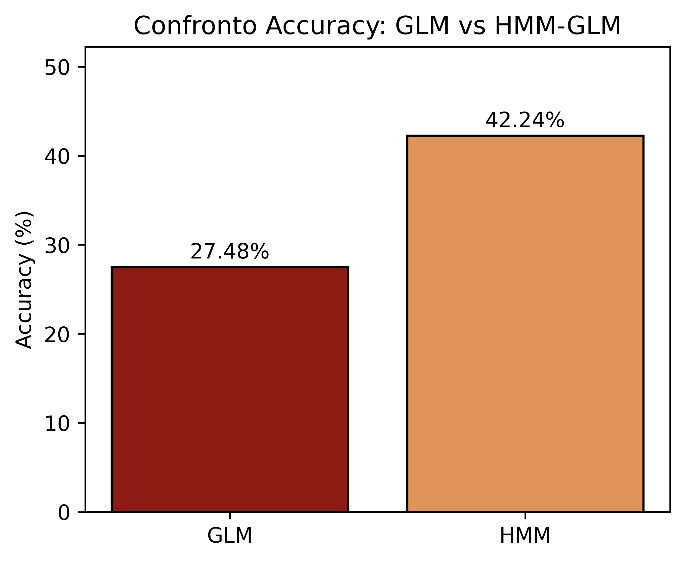
Analisi degli errori
Le mappe di calore in Figura 3.8 mostrano la distribuzione percentuale degli errori arrotondati \((\hat y - y)\). Per l’HMM-GLM predetto sul solo stato più probabile (Figura 3.8 (c)) emerge una forte massa in 0 (predizione esatta) e, a seguire, in -1 e -2 (sottostima), mostrando una forte assimetria degli errori; per il modello HMM-GLM che, invece, considera tutti possibili stati futuri e calcola una predizione pesata su di essi, si ottiene una accuracy leggermente minore ma una simmetria maggiore e l’intervallo \([-1, 1]\) contiene all’incirca l’80% delle predizioni; per il GLM (Figura 3.8 (a)) la maggior parte degli errori è tra -1 e 1 con dispersione più simmetrica. Ciò è coerente con il fatto che l’HMM-GLM “aggancia” meglio le categorie discrete grazie allo stato selezionato, mentre il GLM media meglio il livello.
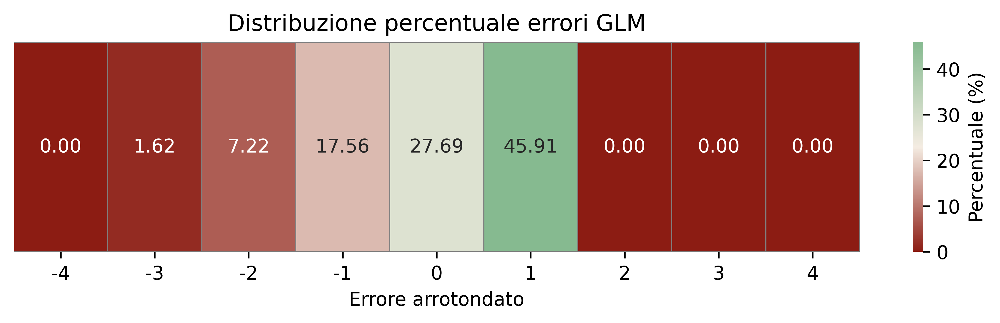
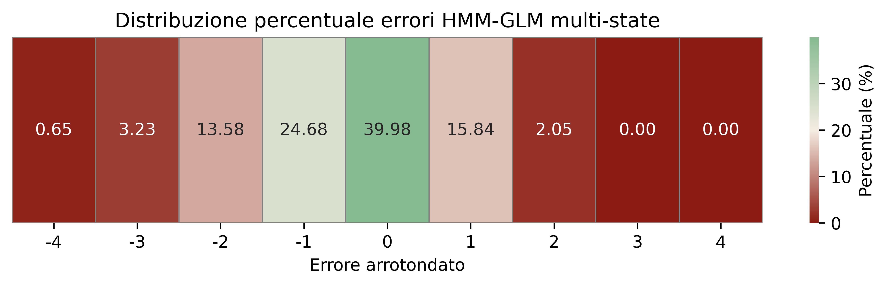
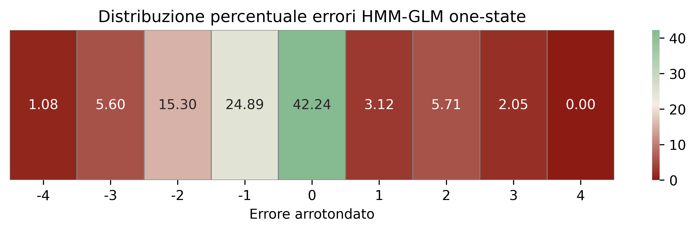
Bellman, Richard Ernest. 1957. Dynamic Programming. Princeton University Press. https://books.google.com/books?id=wdtoPwAACAAJ.
Berry, Lucas. 2016. «Hybrid Hidden Markov Model and Generalized Linear Model for Auto Insurance Premiums». Mathesis, Concordia University. https://spectrum.library.concordia.ca/id/eprint/982074/.
Bingham, Eli, Jonathan P. Chen, Martin Jankowiak, Fritz Obermeyer, Neeraj Pradhan, Theofanis Karaletsos, Rohit Singh, Paul Szerlip, Paul Horsfall, e Noah D. Goodman. 2018. «Pyro: Deep Universal Probabilistic Programming». Journal of Machine Learning Research.
Bishop, Christopher M. 2006. Pattern Recognition and Machine Learning. Springer.
Degirmenci, Alperen. 2014. «Introduction to Hidden Markov Models». https://scholar.harvard.edu/files/adegirmenci/files/hmm_adegirmenci_2014.pdf.
Fan, Jieyu. 2015. «On Markov and Hidden Markov Models with Applications to Trajectories».
Hoffman, Matthew D., David M. Blei, Chong Wang, e John Paisley. 2013. «Stochastic Variational Inference». Journal of Machine Learning Research.
Levin, David A., Yuval Peres, e Elizabeth L. Wilmer. 2009. Markov Chains and Mixing Times. American Mathematical Society.
Murphy, Kevin P. 2012. Machine Learning: A Probabilistic Perspective. MIT Press.
Rabiner, Lawrence R. 1989. «A tutorial on Hidden Markov Models and selected applications in speech recognition». Proceedings of the IEEE 77 (2): 257–86. https://doi.org/10.1109/5.18626.
Wit, Ernst, Edwin van den Heuvel, e Jan-Willem Romeyn. 2012. «"All models are wrong...": an introduction to model uncertainty». Statistica Neerlandica 66 (3): 217–36. https://doi.org/10.1111/j.1467-9574.2012.00530.x.
La loss 0-1 è una funzione di perdita che assegna una penalità pari a 1 se la predizione è errata, 0 se è corretta.↩︎